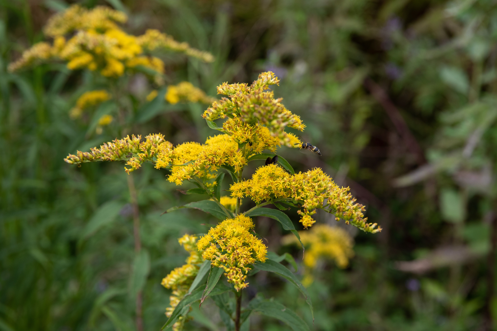

Goldenrod
The goldenrod is the state flower of Kentucky. It is known for its bright yellow flowers that bloom in late summer and fall.
Goldenrods are a genus of about 100 to 120 species of flowering plants in the aster family, Asteraceae. They are native to North America, including Mexico; a few species are native to South America and Eurasia.
Goldenrods are mostly herbaceous perennial species found in open areas such as meadows, prairies, and savannas. They are known for their clusters of small yellow flowers that form dense, plume-like flower heads.
Goldenrods have been used in traditional medicine for various ailments, including inflammation and kidney stones. They are also important for pollinators, providing nectar for bees, butterflies, and other insects.
Despite their beauty, goldenrods are sometimes mistakenly blamed for causing hay fever. The real culprit is usually ragweed, which blooms at the same time and produces large amounts of pollen.